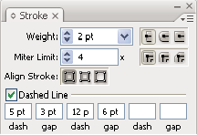

Stroke an object
You use the Stroke panel (Window > Stroke) to control whether a line is solid or dashed, the dash sequence if it is dashed, the stroke weight, the stroke alignment, the miter limit, and the styles of line joins and line caps.

Strokes panel
You can apply stroke options to an entire object, or you can use Live Paint groups and apply different strokes to different edges within the object.
 Apply a stroke color, width, or alignment
Apply a stroke color, width, or alignment
- Select a color from the Color panel, or a swatch from
the Swatches panel or Control panel. Alternatively, double-click
the Stroke box to select a color using the Color Picker.
 If you want to use the current color
in the Stroke box, you can simply drag the color from the Stroke
box onto the object. Dragging does not work on Live Paint groups.
If you want to use the current color
in the Stroke box, you can simply drag the color from the Stroke
box onto the object. Dragging does not work on Live Paint groups.